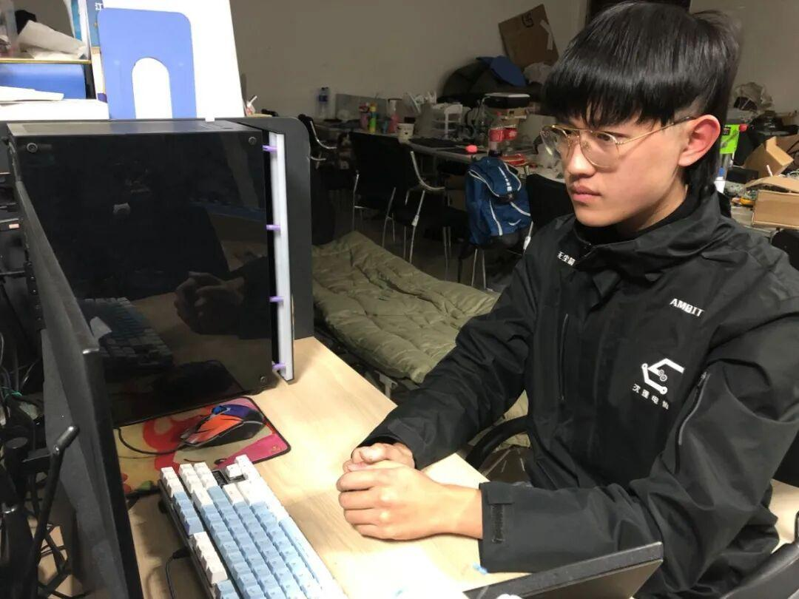
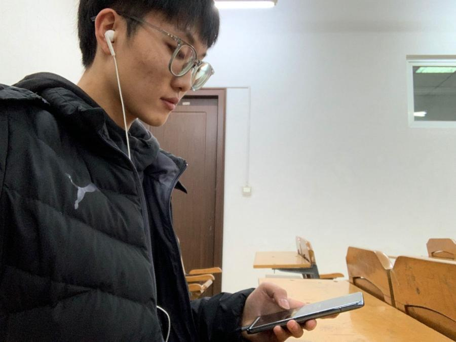
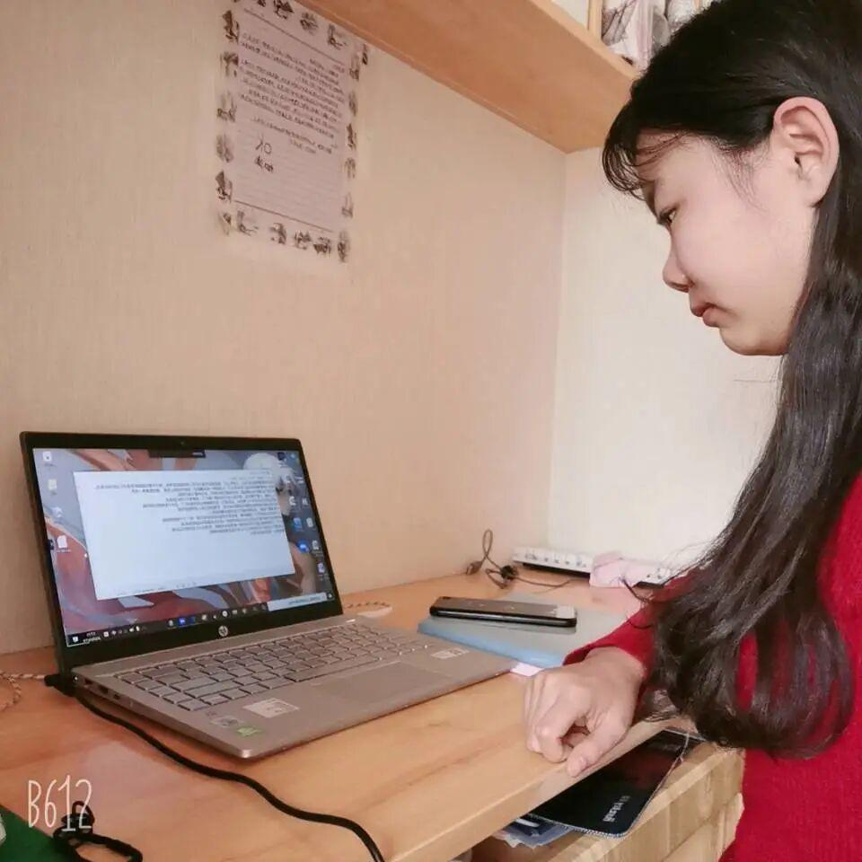
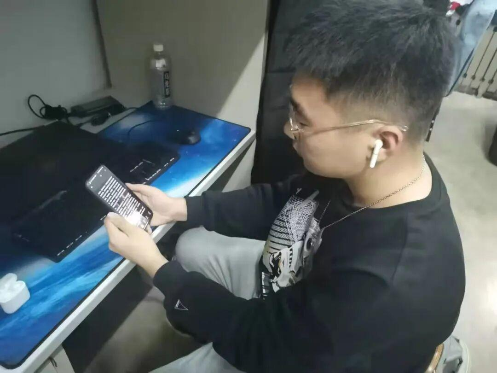
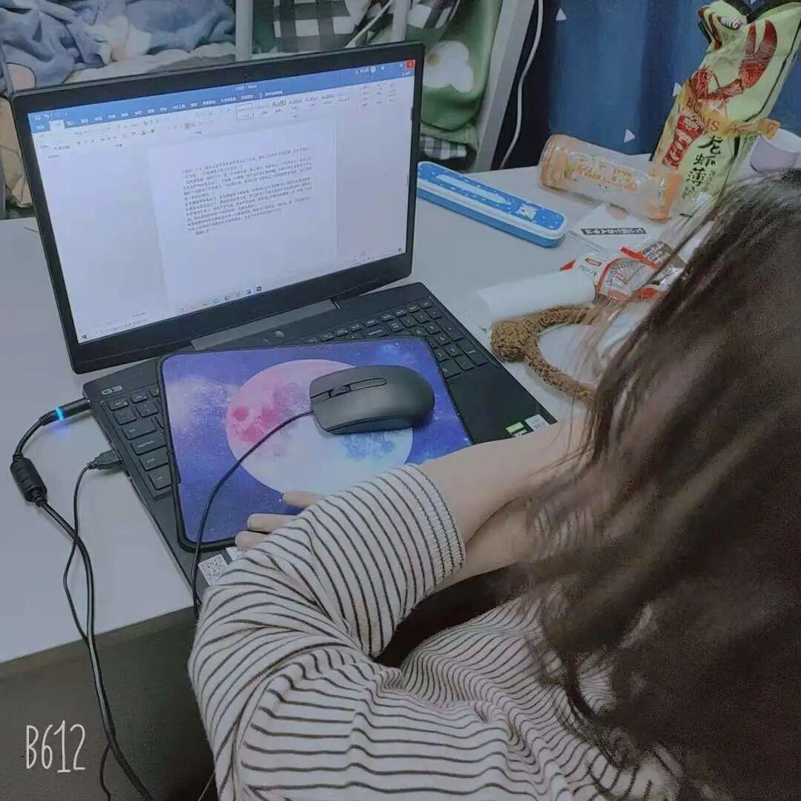

使用小程序
为进一步加强社团管理，促进社团有活力地、健康地发展，保证社团的高效运转，充分发挥学生的主体作用，为社团工作注入新鲜的血液，使社团更顺利地开展工作；推进社团团支部建设工作，加强对社团团员思想的教育和引导，引领社团团员正确塑造自身思想品质，丰富社团的文化活动，解决社团的实际问题；组建各社团新的团支部及领导层，使社团负责人有足够的动力和激情管理社团，更有效地开展社团日常活动以及团日活动，保证社团领导层的连续性。
现于2020-2021年上学期进行2020年度的社团换届工作。
在校团委社团管理部的监督下，由106名电协成员的投票，最后我们选出了我们电协新一届的负责人。
会长：张泽华
副会长：戴子龙，张琛


团支书：吴宇航

组织委员：张琰崧

宣传委员：苗力文

以上就是新一届负责人演讲的照片啦！相信电协在他们的带领下会越来越好！
文字|苗力文